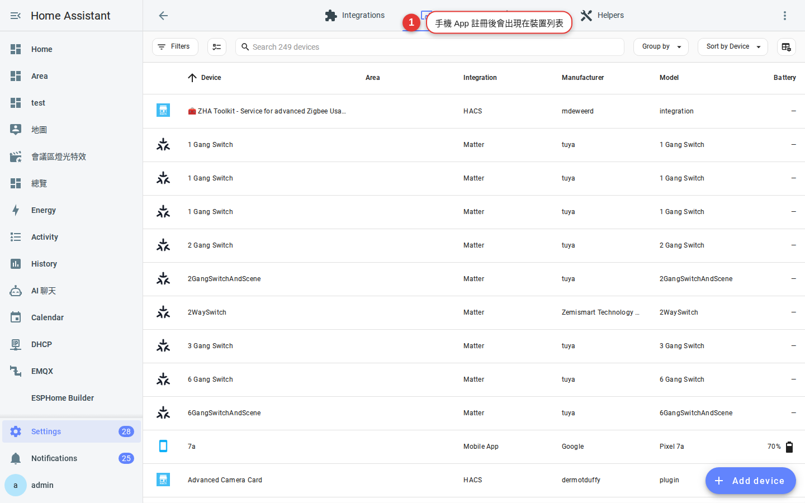
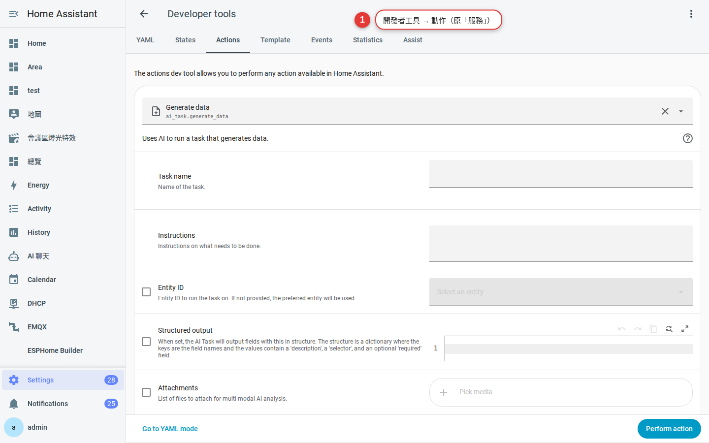

第 7 章
通知
裝 Companion App、綁定手機、送出第一則測試通知。這一章做完，你就打通了「HA 想告訴你事情」的最後一哩。
為什麼要通知
- 洗衣機洗完 → 手機叮一下。
- 門沒關 → 出門 100 公尺就提醒。
- 停電回來了 → 上班中的你先知道。
- 攝影機拍到人 → 帶縮圖的通知。
Companion App 就是這些通知的載體，同時也是你日常操作 HA 最方便的工具。
裝 Companion App
-
手機商店搜「Home Assistant」
iOS：App Store 搜 Home Assistant（開發者是 Home Assistant）。
Android：Play 商店搜 Home Assistant Companion。 -
打開後選「登入 Home Assistant」
App 會自動掃描區網有沒有 HA 主機。有掃到就直接點；沒掃到就手動輸入
http://homeassistant.local:8123或你自己的網址。
用剛才建的帳號登入
-
輸入帳號、密碼
用第 5 章建立的個人帳號（不要用共用的管理員帳號）— 這樣通知才能點名發給你。
-
允許 App 存取的權限
會問要不要開通知、位置、藍牙、相機 等。建議至少開：
- 通知 — 這是本章重點，一定要開。
- 位置（永遠） — 「回到家」「離家」自動化的靈魂。
iOS 提醒：iOS 的「位置：永遠」要在系統設定裡改，第一次登入只能給「使用 App 時」。之後回設定改成「永遠」。 -
Home Assistant 端會自動出現一堆 sensor
回 HA 網頁 → 設定 → 裝置與服務，會看到一個新裝置叫你的手機名稱（例如「小明的 iPhone」），裡面有幾十個 sensor：電量、充電中、WiFi 名稱、Focus 模式等。

圖 7-1手機 App 註冊後，HA 自動出現的 sensor。
送出第一則通知
-
開發者工具 → 服務
HA 網頁左側「開發者工具」→ 「動作」（舊版是「服務」）分頁。
-
服務欄選
notify.mobile_app_XXXXXX 是你剛才登入的手機名稱。這個服務是 App 自動幫你建的。

圖 7-2開發者工具的服務呼叫介面。 -
填 message 與 title
簡單試一下：
service: notify.mobile_app_xxx data: title: "測試通知" message: "從 HA 發來的第一則訊息 🎉"
-
按「呼叫服務」
手機立刻叮！— 恭喜，你的智慧家庭有「嘴巴」了。
進階：帶動作按鈕的通知
通知不只是靜態文字，可以帶按鈕讓你點：
service: notify.mobile_app_xxx
data:
title: "門口有人按電鈴"
message: "點下面決定要不要開門"
data:
actions:
- action: "OPEN_DOOR"
title: "開門"
- action: "IGNORE"
title: "不理"
然後在自動化裡監聽事件 mobile_app_notification_action，拿到 action: "OPEN_DOOR" 就呼叫開門服務。之後不管你在世界哪裡都能遠端開門。
進階應用預告：攝影機動作 → 通知帶截圖 → 有動作按鈕「錄影 30 秒」／「打電話報警」。這些留給下一個系列教學。
常見問題
通知沒收到？
依序檢查：（1）手機系統的 App 通知權限是不是開的；（2）App 內「設定 → Companion App → 通知」是不是開的；（3）呼叫的服務名稱有沒有寫對；（4）手機是不是在勿擾模式。
能通知所有家人的手機嗎？
可以。有個特殊服務叫
notify.notify，會發到所有已登入的手機 App。也可以自己建 notify group 只發給部分人。Email、Line、Telegram 也能發嗎？
可以。SMTP、Telegram Bot、Line Notify（已停止服務改用 Messaging API）都有整合。不過建議先把手機 App 玩熟，其他管道是備援。